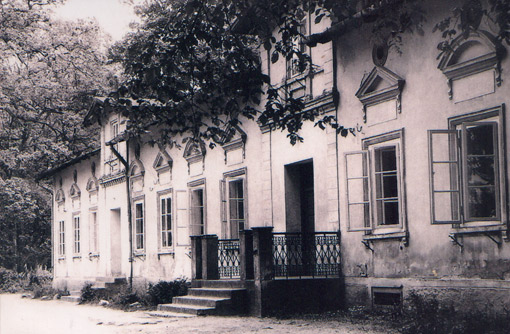
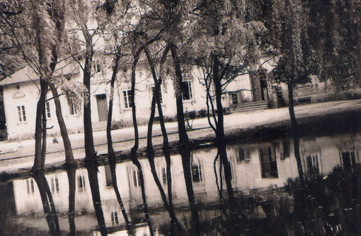
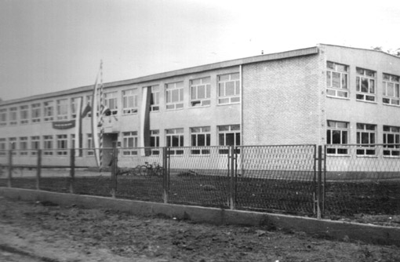
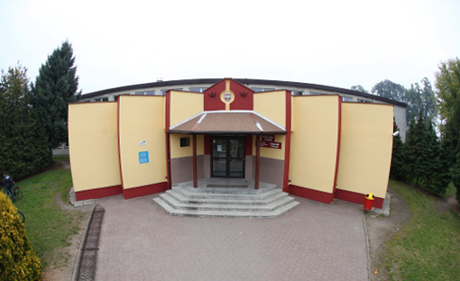
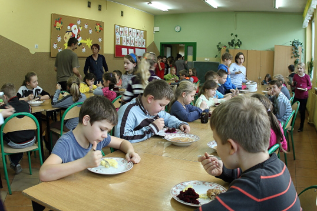
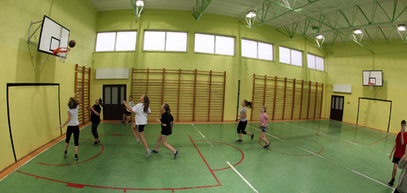

SKOMLIN
SKOMLINHistoria szkoły w Skomlinie
Szkoła w Skomlinie powstała w 1791 roku. Gmina zatrudniła nauczyciela i opłacała mu mieszkanie. Po upadku Powstania Styczniowego w Skomlinie istniała tylko szkoła jednoklasowa z językiem rosyjskim jako wykładowym na wszystkich przedmiotach. Poziom nauczania był niski, gdyż moskiewskiemu zaborcy nie zależało na kształceniu niepokornych Polaków. Zajęcia odbywały się od listopada do kwietnia. Resztę roku dzieci spędzały na pasieniu krów i pracach polowych. Dominował „pruski” model wychowawczy, czyli surowa dyscyplina, wkuwanie na pamięć reguł rosyjskiej ortografii i życiorysów carów. Nauczyciele często stosowali kary cielesne, a pęki rózg moczyły się w każdej klasie.
Po wojnie do pracy zgłosiło się trzech nauczycieli: Weronika i Antoni Kasprowiczowie oraz Filip Nalepa. Dzięki staraniom nauczycieli uruchomiono bibliotekę ze 140 książkami. W starej szkole było osiem sal lekcyjnych i dwa korytarze. Zaraz przy wejściu, z lewej strony, były drzwi do pokoju nauczycielskiego. W środku korytarza serpentyną wznosiły się do góry kręcone, żelazne schody. Na piętrze była kancelaria kierownika szkoły. Znajdowała się tam klasa VII, a później VIII.
Szkoła we dworze wymagała remontu. Władze gminy postanowiły zburzyć ją i wybudować nową. W roku 1991 stanowisko dyrektora szkoły, w wyniku przeprowadzonego konkursu, objęła Aniela Domagała. W 1996 roku, korzystając z dotacji Kuratorium Oświaty w Sieradzu oraz środków z budżetu gminy, do szkoły dobudowano szatnię. Trzy lata później wprowadzono kolejną reformę oświaty. W miejsce ośmioklasowej szkoły podstawowej utworzono sześcioletnią szkołę podstawową i trzyletnie gimnazjum. Obie szkoły pozostały w dotychczasowym budynku, w którym dokonano przebudowy części sal lekcyjnych.
W latach 2003-2008 przeprowadzono częściową termomodernizację budynku związaną z wymianą okien, dociepleniem stropów oraz zastąpieniem tradycyjnych pieców węglowych ekologicznymi kotłami, opalanymi brykietem trocinowym.
W 2008 roku, w wyniku uchwały miejscowej rady gminy, zmieniono strukturę organizacyjną obu placówek, powołując do życia Zespół Szkół w Skomlinie. W jego skład wchodzi Szkoła Podstawowa im. Komisji Edukacji Narodowej w Skomlinie oraz Gimnazjum w Skomlinie. Obowiązki dyrektora Zespołu Szkół przejął w drodze konkursu dotychczasowy dyrektor gimnazjum Jarosław Preś, na stanowisko wicedyrektora powołano natomiast dotychczasową dyrektor szkoły Podstawowej Wiolettę Musiał.Budowę zaczęto w 1971 roku, a już 14 października 1973 roku dokonano otwarcia placówki. Stało się to w 200-lecie powołania Komisji Edukacji Narodowej i takiego też patrona otrzymała nowa szkoła. Zbiorcza Szkoła Gminna w Skomlinie wchłonęła uczniów z zamykanych szkół w Klasaku i Toplinie. Zostały jeszcze szkoły filialne o łączonych klasach I – III w Wicherniku i Wróblewie. W 1978 roku dobudowano na łączniku i nad nim dodatkowe klasy. W ten sposób szkoła powiększyła się do 19 pomieszczeń, w tym bibliotekę i pokój nauczycielski. Jak na owe czasy była to jedna z nowocześniejszych szkół w okolicy, gdyż posiadała salę gimnastyczną i stołówkę ze świetlicą. W latach 70. podczas największego rozwoju naszej gminy myślano o budowie basenu, większej sali gimnastycznej i domu nauczyciela obok szkoły.

W latach 1935-1971 budynkiem szkoły był dwór Bąkowskich. W 1915 roku niemiecki naczelnik Wielunia Kreischef nakazał obowiązkowe otwarcie polskich szkół. W Skomlinie polska szkoła powstała już w 1916 roku, a jej pierwszym kierownikiem był Teodor Trojanowski. Po wyzwoleniu wprowadzono obowiązkową naukę w siedmioklasowej szkole podstawowej. Taką szkołę w okolicy miał tylko Skomlin. Mieściła się w Domu Parafialnym i tzw. „białym domu” naprzeciw plebani. Miał tam też służbowe mieszkanie kierownik szkoły. W 1935 roku Zarząd Gminy zakupił na cele oświatowe 1,6- hektarowy park wraz z dworem po Bąkowskich za 16 tys. zł. Dzieci miały wreszcie wygodne, duże sale lekcyjne i park do „wybiegania się”, w którym zaczęto tworzyć boiska. W 1938 roku do tej szkoły chodziło 420 uczniów. Ostatni przed wybuchem wojny spis informuje o 9 nauczycielach. Byli to: Roman Kapała (kierownik szkoły), Antoni Karasiński (tutejszy proboszcz), Weronika Kasprowicz, Antoni Kasprowicz, Helena Włodarczyk, Helena Kobrynowicz, Stanisław Olbomski, Helena Kućkowska oraz Antoni Jędrasik.
Po wojnie do pracy zgłosiło się trzech nauczycieli: Weronika i Antoni Kasprowiczowie oraz Filip Nalepa. Dzięki staraniom nauczycieli uruchomiono bibliotekę ze 140 książkami. W starej szkole było osiem sal lekcyjnych i dwa korytarze. Zaraz przy wejściu, z lewej strony, były drzwi do pokoju nauczycielskiego. W środku korytarza serpentyną wznosiły się do góry kręcone, żelazne schody. Na piętrze była kancelaria kierownika szkoły. Znajdowała się tam klasa VII, a później VIII.

Szkoła we dworze wymagała remontu. Władze gminy postanowiły zburzyć ją i wybudować nową. W roku 1991 stanowisko dyrektora szkoły, w wyniku przeprowadzonego konkursu, objęła Aniela Domagała. W 1996 roku, korzystając z dotacji Kuratorium Oświaty w Sieradzu oraz środków z budżetu gminy, do szkoły dobudowano szatnię. Trzy lata później wprowadzono kolejną reformę oświaty. W miejsce ośmioklasowej szkoły podstawowej utworzono sześcioletnią szkołę podstawową i trzyletnie gimnazjum. Obie szkoły pozostały w dotychczasowym budynku, w którym dokonano przebudowy części sal lekcyjnych.

W latach 2003-2008 przeprowadzono częściową termomodernizację budynku związaną z wymianą okien, dociepleniem stropów oraz zastąpieniem tradycyjnych pieców węglowych ekologicznymi kotłami, opalanymi brykietem trocinowym.
W 2008 roku, w wyniku uchwały miejscowej rady gminy, zmieniono strukturę organizacyjną obu placówek, powołując do życia Zespół Szkół w Skomlinie. W jego skład wchodzi Szkoła Podstawowa im. Komisji Edukacji Narodowej w Skomlinie oraz Gimnazjum w Skomlinie. Obowiązki dyrektora Zespołu Szkół przejął w drodze konkursu dotychczasowy dyrektor gimnazjum Jarosław Preś, na stanowisko wicedyrektora powołano natomiast dotychczasową dyrektor szkoły Podstawowej Wiolettę Musiał.Budowę zaczęto w 1971 roku, a już 14 października 1973 roku dokonano otwarcia placówki. Stało się to w 200-lecie powołania Komisji Edukacji Narodowej i takiego też patrona otrzymała nowa szkoła. Zbiorcza Szkoła Gminna w Skomlinie wchłonęła uczniów z zamykanych szkół w Klasaku i Toplinie. Zostały jeszcze szkoły filialne o łączonych klasach I – III w Wicherniku i Wróblewie. W 1978 roku dobudowano na łączniku i nad nim dodatkowe klasy. W ten sposób szkoła powiększyła się do 19 pomieszczeń, w tym bibliotekę i pokój nauczycielski. Jak na owe czasy była to jedna z nowocześniejszych szkół w okolicy, gdyż posiadała salę gimnastyczną i stołówkę ze świetlicą. W latach 70. podczas największego rozwoju naszej gminy myślano o budowie basenu, większej sali gimnastycznej i domu nauczyciela obok szkoły.

Baza Dydaktyczna
Obecnie w budynku szkolnym mieści się dziewiętnaście sal lekcyjnych. Szkoła dysponuje dwiema pracowniami komputerowymi z dostępem do szerokopasmowego internetu. Z sieci korzystać można również w bibliotece, przy której stworzono multimedialne centrum informacji. W kilku pracowniach uczniowie mają do dyspozycji tablice interaktywne, w procesie dydaktycznym stale wykorzystuje się szeroko pojętą technologię cyfrową. W placówce funkcjonuje świetlica, zapewniająca opiekę nad dziećmi dojeżdżającymi z ościennych miejscowości. Sala świetlicowa pełni również rolę szkolnej stołówki. Na miejscu przygotowywane są napoje oraz dania obiadowe. Z serwowanych tu posiłków korzysta około dwustu uczniów.
Baza Sportowa
Placówka dysponuje salą gimnastyczną, salą do ćwiczeń dla uczniów nauczania wczesnoszkolnego oraz siłownią. W otoczeniu szkoły znajdują się boiska: do piłki nożnej, do piłki koszykowej, dwa do piłki siatkowej (w tym jedno boisko do siatkówki plażowej). Ponadto istnieje tu 60-metrowa bieżnia i skocznia do skoku w dal.
Kierownicy i dyrektorzy Szkoły Podstawowej w Skomlinie:
- Teodor Trojanowski 1916-1935
- Roman Kapała 1935-1939
- Antoni Kasprowicz 1945-1964
- Dominik Żółtaszek 1964-1973
- Zdzisław Wyrembak 1973-1991
- Aniela Domagała 1991-2001
- Wioletta Musiał 2001-2008
- Elżbieta Stojanowa 1999-2001
- Jarosław Preś od 2001
Źródło: http://www.szkola-skomlin.pl